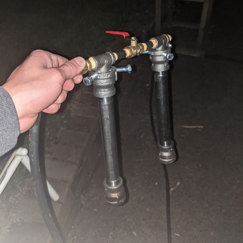
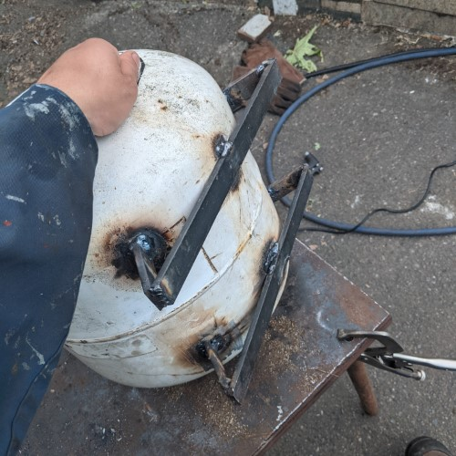
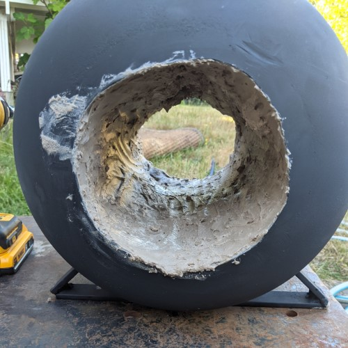

<!DOCTYPE HTML>
<!--
	Phantom by HTML5 UP
	html5up.net | @ajlkn
	Free for personal and commercial use under the CCA 3.0 license (html5up.net/license)
-->
<html>
	<head>
		<title>Generic - Phantom by HTML5 UP</title>
		<meta charset="utf-8" />
		<meta name="viewport" content="width=device-width, initial-scale=1, user-scalable=no" />
		<link rel="stylesheet" href="assets/css/main.css" />
		<noscript><link rel="stylesheet" href="assets/css/noscript.css" /></noscript>
	</head>
	<body class="is-preload">
		<!-- Wrapper -->
			<div id="wrapper">

				<!-- Header -->
					<header id="header">
						<div class="inner">

							<!-- Logo -->
								<a href="index.html" class="logo">
									<span class="symbol"></span><span class="title">Phantom</span>
								</a>

							<!-- Nav -->
								<nav>
									<ul>
										<li><a href="#menu">Menu</a></li>
									</ul>
								</nav>

						</div>
					</header>

				<!-- Menu -->
					<nav id="menu">
						<h2>Menu</h2>
						<ul>
							<li><a href="index.html">Home</a></li>
							<li><a href="generic.html">Ipsum veroeros</a></li>
							<li><a href="generic.html">Tempus etiam</a></li>
							<li><a href="generic.html">Consequat dolor</a></li>
							<li><a href="elements.html">Elements</a></li>
						</ul>
					</nav>

				<!-- Main -->
					<div id="main">
						<div class="inner"><h1> Forge V1</h1><br><br>Recently I have been working on a propane backyard forge. I am doing this as a hobby, and I wanted to document some of the effort that it took to make this project. Unfourntually I dont have pitures of all parts of this desgin, blogging this was an after thought.<br><h2> Design and Construction prossess</h2><br>My system is comprised of a few different large parts: fuselage, burners, and auxially components. This is all mounted on a wealding table for sturdiness and thermal protection.<br><h3> Propane Burner</h3><br>The first design I attempted to create was built using a dual venturi burner setup using <a href="https://www.instructables.com/how-to-build-a-gas-forge-burner/">this</a> as the main referance for my design. My first burner differed in a few ways: I had two burners, which could be run in either one or two-burner, and my gas was fed through the top. Outside of the forge this system worked very well:<br><br>However, once I put the torch into the fuselage I ran into a lot of compustion problems. My flame would sputter, would not maintain a consistent blue flame, and the majority of the propane was ejected from the forge before it could burn. The forge was horribly inefficent. I went through 20lbs of propane per hour almost. This first test also showed me that a togglable second torch was not an option: when the propane expanded and traveled down the burner it would cool the system, without the gas flow active my fittings and hoses were much too hot for safe opertaion.<br>To account for these problems I had to redesign both the propane and air intake.<br><h4> Propane Manifold</h4><br>My first propane maifold was made of 1/4" brass npt pipe. I put a valve in the system so that I could toggle between 1 and 2 burner mode. For the propane nossels I used endcaps with #58 drill holes in the center of them - it was very important to ensure these holes were 90° to the pipe, so I could accuratly aim the propane down the torch.<br>This design had a few problems. Since the propane was fed in on one side, one torch would recieve more pressure causing uneven heating. At this point I also learned that a two burner system was not a feasable idea, since heat rises, whichever torch was off would act like chimeny heating the entire system. The plastic gas hose was also getting hot to the touch during when the forge was on. To remedy these problems I fed the gas through the middle of the manifold, removed the valve, added a long nipple to distance the hose from the head, and I switch to 1/8" brass fittings for reasons I will discuss in the next chapter.<br><h4> Air Intake</h4><br>Air modulation was by far the most difficult of this project. My air intake system went thorgh three main verions, each had their learning expriences attactched to them.<br><h5> Venturi Burner Backgorund</h5><br>Venturu burners are a type of passive air torches. If you simply inject a stream of propane into the open air it will burn slowly - leading to a cold flame. Venturi burners are desgined to midigate this problem thorgh application of bernoulli's principle. The basic parts the burner are: the injector, a tube, and a nossle. As the propane is injected into the pipe, the fast moving gas causes a low-pressure zone, drawing more air into the system. The propane-air mixture then travels down the tube, allowing it to mix. At the end of the burner, crutially, there is a nossle. This nossle increases the crossectional area of the pipe, causing the propane-air mixture to decelerate, assumung velocity < Mach 1. <br><br>To have a well function torch there are many reqirmetns. <br>- The propane must be traveling at a high enough speed to pull sufficent quantites of air into the burner<br>- The propane-air mixture must only burn after the nossle<br>- There must slighty more air than nessisary for minimal propane waste<br><h5> Version 1 - Venturi Intake V1</h5><br>My first intake system was made of a 8" x 3/4" nipple and 2 3/4" to 1" inch coupulers. I drilled and tapped three holes in thirds, this would hold the gas manifold. Assembling yeilded:<br><br>This torch worked well in isolation, however failed misibly once in the forge. It failed in all counts. Most of the fuel started buring to early, and would not complete buring in the forge causing lots of waste.<br>The main propblem with this design was the low surface area between the propane nossle and the coupuler that held it.<br><h5> Version 2 - Venturi Intake V2t</h5><br>My therory for V2 was to maximize the crossectional area that air could flow in with. To achive this I switch out the top coupuler with a T-fitting. During this I also switched from 1/4" to 1/8" brass, this also increases the crossectional area that the air could flow around.<br><br>This design was better, however faced the same issures as the fisrt desgin.<br><h5> Version 3 - Forced Air</h5><br>I am not quite sure why my Venturi burner intakes were inncapable of producing the quatlity of flame I wanted, but I decided to switch gears to a forced air system. Thankfully this converions was very simple. I disconneted the coupulers at the bottom of the torch, conneted the two T-fittings, pluged one end, and connected the other to a hair dryer, and pluged all other holes with tin foil. I taped the "cold" setting down on the hair dryer to reduce the changes of the hair dryer over heating.<br><br><h3> Main fuselage</h3><br>The main fuselage of the forge is made of a propane tank and various pieces of scrap metal. The forge is lined with 2 layers of 2" kaowool, and coated with a refractory cement (refractory cement turned out to be the incorrect material for this job.) The burner ports are made of two 2" scrap pieces of tube stock.<br>Due to a head loss problem, I added doors to the front and rear of the forge. This modification dramatically improved the efficiency of my forge; I was not able to get efficiency measurements but I suspect the efficiency improvement was in the range of 100%-200%. In addition, I added a small platform to the from of the forge for resting objects.<br><br>All of my propblems related to this were due to percision. This entire system is held together with shotty weld, hopes, and dreams.<br><br>A gallery of build photos:<br><br><br><br><br><br><br><br><h3> Future Version Consiterations</h3><br>I think the biggest shortfall of the entire design was the lack of a desgin. Since I was working on a tight budget (~200$ for raw materials,) I worked with a lot of suboptimal material. Knowing what I know now I would:<br>- Build a forced air <a href="https://www.youtube.com/watch?v=_BrgjIooH28">ribbon burner</a><br>- Use a forge blower insted of a hair dryer<br>- Be more presise in every regard<br>- Insted of cutting a hole through the entire propane tank, only cutting one end<br>I am happy enough with what I was able to produce, and overall this was a great learing exprience and a great protype development prosses.<br><h2> Results</h2><br>Using the forge, here are some things I made. I'm still leaning to forge, so things look a little rough.<br><br><br></div>
					</div>

				<!-- Footer -->
					<footer id="footer">
						<div class="inner">
							<section>
								<h2>Get in touch</h2>
								<form method="post" action="#">
									<div class="fields">
										<div class="field half">
											<input type="text" name="name" id="name" placeholder="Name" />
										</div>
										<div class="field half">
											<input type="email" name="email" id="email" placeholder="Email" />
										</div>
										<div class="field">
											<textarea name="message" id="message" placeholder="Message"></textarea>
										</div>
									</div>
									<ul class="actions">
										<li><input type="submit" value="Send" class="primary" /></li>
									</ul>
								</form>
							</section>
							<section>
								<h2>Follow</h2>
								<ul class="icons">
									<li><a href="#" class="icon brands style2 fa-twitter"><span class="label">Twitter</span></a></li>
									<li><a href="#" class="icon brands style2 fa-facebook-f"><span class="label">Facebook</span></a></li>
									<li><a href="#" class="icon brands style2 fa-instagram"><span class="label">Instagram</span></a></li>
									<li><a href="#" class="icon brands style2 fa-dribbble"><span class="label">Dribbble</span></a></li>
									<li><a href="#" class="icon brands style2 fa-github"><span class="label">GitHub</span></a></li>
									<li><a href="#" class="icon brands style2 fa-500px"><span class="label">500px</span></a></li>
									<li><a href="#" class="icon solid style2 fa-phone"><span class="label">Phone</span></a></li>
									<li><a href="#" class="icon solid style2 fa-envelope"><span class="label">Email</span></a></li>
								</ul>
							</section>
							<ul class="copyright">
								<li>&copy; Untitled. All rights reserved</li><li>Design: <a href="http://html5up.net">HTML5 UP</a></li>
							</ul>
						</div>
					</footer>

			</div>

		<!-- Scripts -->
			<script src="assets/js/jquery.min.js"></script>
			<script src="assets/js/browser.min.js"></script>
			<script src="assets/js/breakpoints.min.js"></script>
			<script src="assets/js/util.js"></script>
			<script src="assets/js/main.js"></script>

	</body>
</html>